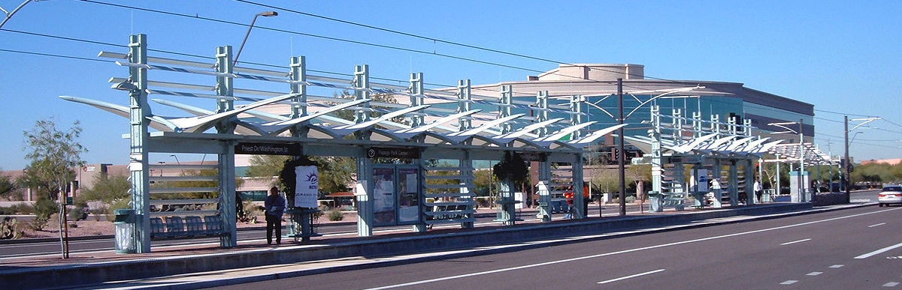

Eastbound
Line
60
124
Destination
Randolph/Harbor Dr
Navy Pier
Frequency
Every 20 minutes
Every 10 minutes
Northbound
Line
151
Destination
Devon/Clark
Frequency
Every 16 minutes
Southbound
Line
J14
124
Destination
103rd/Stony Island
Navy Pier
Frequency
Every 15 minutes
Every 10 minutes
Reroute
Line
6x
Destination
Jackson Park Express
Frequency
N/A
Out of Service
Line
4
20
157
Destination
Cottage Grove
Madison
Streeterville/Taylor
Frequency
Resumes 12:10am
Resumes 12:10am
Resumes 6:00am